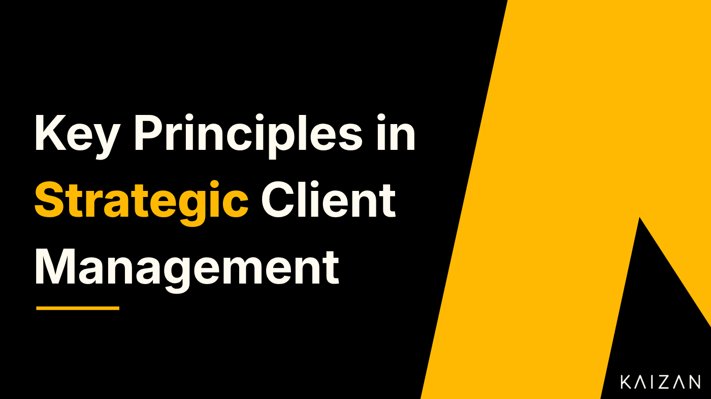

Key Principles in Strategic Client Management

Strategic client management is an ongoing process that involves building and maintaining strong relationships with clients to achieve business objectives. It requires a deep understanding of the client’s business, goals, and needs, as well as a commitment to ongoing communication and collaboration. In any area of business, it’s important to consider the overall goal and build toward long-term success. Strategic client management is the embodiment of this aim within client management. It brings its own specific set of challenges, and of resources for overcoming them.
In this article, we’ll look at:
What is strategic client management?
Why is strategic client management important for a business?
What are some of the challenges of strategic client management?
How can I improve my skills to be better at strategic client management?
What Is Strategic Client Management?
Strategic client management is the process of developing and maintaining relationships with key clients. It broadens and deepens a business’s approach to client management, making this part of the business more effective. It means looking at the big picture, thinking about how it will develop in the long term, and working from there.
Instead of a reactive response to immediate problems, client management becomes a proactive process, steering client relationships to the benefit of both the business and the client. This gives you a greater degree of control, and saves you effort in tackling crises, but it also means creating more structure and an organised approach to working with clients.
In practice, this means identifying key clients and creating a structured method of working together and growing the partnership. That involves steps such as:
Assigning teams and individuals with the specific responsibility of managing each client.
Developing a profile of the client to understand their needs.
Working out best practices for communicating with them.
Creating a strategic plan for how to develop the relationship with the client, including resources and goals.
Monitoring the relationship on an ongoing basis to anticipate problems and identify opportunities to expand.
Strategic client management provides a framework for identifying and targeting high-value clients, and for developing and implementing strategies for retaining and growing these relationships. It prioritises work that protects the company’s biggest sources of revenue, and means that suitable thought, planning, and resources go into working with clients.
It enables teams to focus on the client and their needs. The strategy should identify those needs, how to keep track of them, and how to respond to them. But it’s also about identifying how those needs can benefit the business and how the understanding of the client can be used to improve the business.
Why Is Strategic Client Management Important For a Business?
Strategic client management is important because it allows a business to build and maintain strong relationships with its key clients. This is critical to both maintaining and increasing revenue streams.
Through strategic client management, a business can better understand the needs and wants of its clients then tailor its products and services to meet those needs. Profiling and planning for specific clients will help you shape your work for them, which increases client satisfaction. Having a forward-looking strategy instead of just a series of reactions means that you will be ahead of the ball, constantly impressing clients by providing the things they hadn’t yet said they needed. Strategising your communications means that you’ll approach clients in a way that suits them, whether they recognise it or not.
All of this leads to greater client loyalty, as you’re providing the services the client wants in a way that suits them. Loyalty protects your revenue streams from competitors trying to sell their own products and services to the client. It also means that the client is more likely to recommend you to others, which can expand your markets.
In addition, strategic client management can help you to identify and capitalise on new business opportunities. By building profiles of your clients, you can understand their interests and identify gaps in what they’re getting, opportunities for you to sell more of your services, or to develop new products for client groups.
Client management is important for any business with substantial long-term clients. But like any area in business, it comes with challenges.
What Are Some of the Challenges in Strategic Client Management?
Some of the key challenges in strategic client management are distinctive to this field, while others are common challenges given a client management twist.
Time management
One of the most difficult challenges for client success managers is to balance their time. There are deadlines to meet, client meetings and networking events to attend, projects to complete, and an endless stream of calls and emails to respond to.
One of the biggest risks is that reactive tasks get in the way of proactive ones, current crises obstructing strategic goals. Deal with twenty seemingly urgent emails and suddenly you’ve lost the morning you were going to spend researching a client profile. Meanwhile, other small tasks are slipping through the gaps, and another key client hasn’t had a catchup call in weeks. Everybody’s working experience is different, but the challenge of fitting it all in is universal.
One way to overcome this challenge is to create a daily or weekly schedule and stick to it as much as possible. Block out time for critical tasks, not just calls and meetings.
Another option is to use a prioritisation grid to differentiate important tasks from urgent ones, then focus on important over urgent whenever you can.
There are many tools designed to increase the productivity of client service teams, they all vary and offer a range of different features. Kaizan is a client intelligence tool created for client service teams, which helps to increase their productivity by reducing time spent on administrative tasks. Kaizan automatically captures meeting minutes and generates a meeting summary with action items which can be emailed directly to clients, saving significant time.
Client expectations
It can be difficult to meet all of a client’s expectations. They may have unrealistic ideas about what can be achieved and what you can provide. Even if their expectations are reasonable, it’s easy to make a mistake by losing track of what they want.
An important part of overcoming this challenge is to set realistic expectations with the client from the beginning. Be clear about what you do and don’t provide, how quickly you can respond to requests, and your team’s availability. If the client has employees working around the clock and you don’t, then they need to know what hours they can get hold of your team to troubleshoot an issue or answer an urgent question.
Keep the client updated on the progress of their account. That way, they’ll know what to expect and when. This prevents uncertainty, which most people find uncomfortable, or the client filling gaps with their own desires and assuming that these will be met.
Even within the boundaries you’ve set, you need to understand what assumptions and expectations the client will have, and work to these when it’s practical. If they expect a follow-up email after each call, then it’s better to take a few minutes to do that than to leave them frustrated. And if there are expectations you won’t meet, then being aware of them means that you can warn the client of this and manage the fallout.
Keep track of what you’ve said that you will do, as your words also set expectations. You might not have meant something as a promise, but if you say that you’ll have a report done within a week, the client is going to expect just that. Be careful not to set unrealistic goals for yourself, to keep track of what you’ve agreed, and to deliver what has been promised.
Relationship building
Strategic client management is all about building effective working relationships. Account managers need to build and maintain strong relationships with their clients. This allows them to understand the clients’ needs, build trust with them, and anticipate problems before they happen.
This means keeping in touch with the client on a regular basis, this keeps the connection alive and provides the client with an opportunity to bring up small concerns that might otherwise be left to drag on. It reinforces the positive bond between you, and with it the loyalty that you want to foster from clients.
This is partly about getting to know the client’s representatives on a personal level. Take the time to ask about them, not just the business, and to show an interest in them as people. This will help to humanise the interactions and to create a connection that’s about more than client and provider.
Organisational skills
Effective client management involves a lot of moving parts. You need to keep track of what’s going on with various different clients, products, and projects, and client service managers need to be organised in order to keep track of all this. It’s not enough just to have things like account information and work records, you need to be sure that it’s up to date and that you can quickly access it.
Organisational work includes keeping track of deadlines, invoices, and other important information. If an account manager is not organised, this can lead to missed deadlines, frustrated clients, and lost revenues.
As with time management, there are a lot of different tools available to help you stay organised, from task tracking apps, project management tools to working journals to databases and spreadsheets. Your company will have systems in place for organising people and information, and you shouldn’t contradict these, but you can work with different approaches within the limits this sets. Try out different tools to find the ones that work for you, and don’t be afraid to change them later as your needs change.
Problem-solving
A disproportionate amount of client management work is problem solving. This is because problems take far more effort to deal with than the things that are going well. Whether it’s problems with a product, in your relationship with the client, or relating to some other element of the work, the ability to deal with difficult situations is crucial. This means that you have to be ready to think outside the box, to look for unexpected answers to unexpected situations.
In one sense, it’s impossible to prepare for the problems that come up. By definition, these will be the things that you didn’t predict, the situations that you didn’t see coming, the reactions that hit you out of left field.
But you can lay the groundwork to respond well by practising your problem-solving skills. When faced with a new situation, think about all the different ways you could deal with it, not just the obvious or easy ones. Try to be flexible in your approach, not just to leap to the first answer or solution that comes up. The more you work with novel solutions, the easier it will become to solve the problems you face.
How Can I Improve My Skills to Be Better at Strategic Client Management?
Obviously, we all want to get better at what we do. Understanding what strategic client management is and the skills involved is a good start, but how can you grow beyond that?
There is no one-size-fits-all answer to this question. The best way to improve your skills in strategic client management will vary depending on your personality, your work, your goals, and the tools you have access to. But there are some broad approaches to get you started.
Reading
Reading is one of the most flexible approaches to developing your skills. You can fit it in around your schedule, in times and places that suit you. With e-book readers now available as phone apps, you can take a book with you wherever you go.
What and how to read will depend upon what works for you. Some people like hefty academic tomes that dig deep into a subject. Others prefer the accessible tone of how-to books for professionals or the bite-sized information of blog posts. These are all equally valid, and while it’s worth exploring different formats, don’t force yourself to stick with something that doesn’t work for you just because you’ve been told it’s important. If the knowledge isn’t sinking in then it’ll be a frustrating waste of your time.
What we mean by reading around a topic has also expanded. If your brow furrows and the words start to dance when you look at the page, then you could try audiobooks, also a useful option for learning while you’re exercising, commuting, or cooking the dinner. Documentaries provide another format for learning, as do TED talks, and there are a growing number of insightful video essayists and providers of professional advice working on sites like YouTube.
As well as using different formats, try different content options. Sometimes, the most useful book is one that directly tackles a topic, like reading Robert Kelsey’s Get Things Done to help you with organisation, or Chris Voss and Tahl Raz’s Never Split the Difference to sharpen your negotiating skills. But sometimes it’s useful to read more widely, to provide context for what you’re learning about and seeing in others, like reading Richard Firth-Godbehere’s A Human History of Emotion to contextualise advice on emotional intelligence.
Whatever you read, watch, or listen to, make an effort to actively apply your learning. If all you do is make a few notes, then the knowledge will quickly fade away. If you try out that new organisational system or negotiating method, even for something small, then you’ll make the learning more real and reinforce it in your mind.
Events
Attending relevant events can be a great way to expand your skills, especially if you benefit from a more active and interactive approach to learning than reading provides.
Some events are obviously designed to help you expand your skills. You should be able to find workshops, seminars, and training courses on the skills that matter to you, from time management to problem solving to working with clients. These can be expensive, so look at the reviews and at the course content to decide whether an event is actually going to meet your needs. If you can, find events recommended by people you know, as you can be more certain of their suitability than if you rely on internet reviews.
Other events can also help you expand your skills. Meetings of relevant professional associations can be a great opportunity to network with other professionals, ask their advice, and work together on solutions for shared challenges. They can also lead to more recommendations for events, books, and other materials that will help you to develop.
Whether you’re going to a training event or a networking one, to make the most of it, go in with an agenda. Know what you want to learn about and how that will connect to your work. Be ready to ask questions that will help with this and to put the pieces together as you go along. This doesn’t mean that you should be inflexible in your approach or ignore unexpected lessons on topics you weren’t there for. But it does mean that you’ll be more focused, and that you’ll have mental hooks to hang your learning on.
Experience
Perhaps the most valuable way of learning, and the one that lets you make use of all those books and courses, is the practical experience of working in the client management field.
Look for opportunities to gain experience working with a wide range of clients, so that you sharpen different tools in your mental toolkit. It’s common to seek out comfortable situations, including clients that you find it easy to work with, and managers will often assign team members to the kind of work where they’ve already proved they can excel. But if you want to improve then you’ll need to push yourself and to ask for a wide range of clients to give you better experience.
If possible, try to gain experience working with clients in a variety of industries and sectors. The more different experiences and perspectives you get, the more sophisticated and multi-faceted your understanding will become. You’ll get to understand what’s fundamental to client management across the board, what’s specific to different sectors, and how to adapt when working with a client whose work differs from those you’re used to.
The wider the range of clients you work with, and the wider the range of experiences you get, the better you’ll be able to understand clients’ needs and how to best meet them.
Taking a Rounded Approach
Strategic client management means taking a rounded approach, looking at the big picture of your relationships with clients and the ways those relationships develop over time. It relies on being proactive rather than reactive, recognising the key challenges of the field, and developing the skills to tackle them.
Fortunately, there are resources available to help you with this, and opportunities to grow your skills. If you can take the time to learn, to think strategically, and to keep evolving your approach, then you’ll vastly increase your chances of retaining clients and growing revenues for your business.